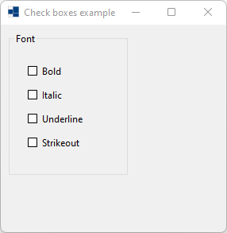
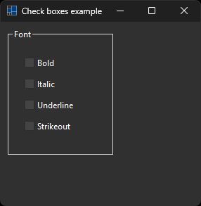
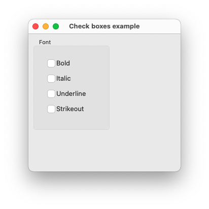
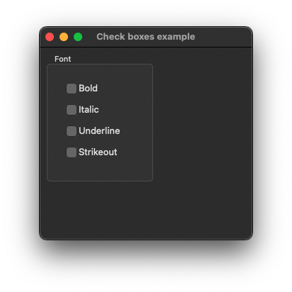
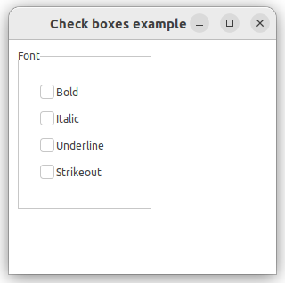
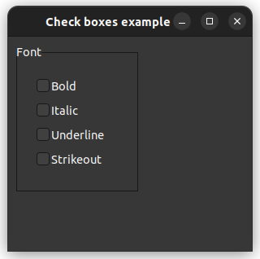

|
xtd
0.2.0
|
check_boxes.cpp
demonstrates the use of xtd::forms::check_boxes check_box object collection.
- Windows
- 

- macOS
- 

- Gnome
- 

#include <xtd/forms/application>
#include <xtd/forms/check_boxes>
#include <xtd/forms/group_box>
#include <xtd/forms/form>
using namespace xtd::forms;
auto main()->int {
auto italic_check_box = check_boxes::italic(font_group_box, false, check_state::unchecked, {20, 50});
auto underline_check_box = check_boxes::underline(font_group_box, false, check_state::unchecked, {20, 80});
auto strikeout_check_box = check_boxes::strikeout(font_group_box, false, check_state::unchecked, {20, 110});
application::run(main_form);
}
static void run()
Begins running a standard application message loop on the current thread, without a form.
static check_box italic(bool three_state=false, xtd::forms::check_state check_state=xtd::forms::check_state::unchecked, const drawing::point &location={-1, -1}, const drawing::size &size={-1, -1}, const xtd::ustring &name=xtd::ustring::empty_string)
Create a system-defined check_box that represent italic check_box.
Definition: check_boxes.h:732
static check_box bold(bool three_state=false, xtd::forms::check_state check_state=xtd::forms::check_state::unchecked, const drawing::point &location={-1, -1}, const drawing::size &size={-1, -1}, const xtd::ustring &name=xtd::ustring::empty_string)
Create a system-defined check_box that represent bold check_box.
Definition: check_boxes.h:205
static check_box underline(bool three_state=false, xtd::forms::check_state check_state=xtd::forms::check_state::unchecked, const drawing::point &location={-1, -1}, const drawing::size &size={-1, -1}, const xtd::ustring &name=xtd::ustring::empty_string)
Create a system-defined check_box that represent underline check_box.
Definition: check_boxes.h:1276
static check_box strikeout(bool three_state=false, xtd::forms::check_state check_state=xtd::forms::check_state::unchecked, const drawing::point &location={-1, -1}, const drawing::size &size={-1, -1}, const xtd::ustring &name=xtd::ustring::empty_string)
Create a system-defined check_box that represent strikeout check_box.
Definition: check_boxes.h:1208
static control create(const drawing::point &location={-1, -1}, const drawing::size &size={-1, -1}, const xtd::ustring &name=xtd::ustring::empty_string)
A factory to create a specified control with specified location, size, and name.
static control create(const drawing::point &location={-1, -1}, const drawing::size &size={-1, -1}, const xtd::ustring &name=xtd::ustring::empty_string)
A factory to create a specified control with specified location, size, and name.
static xtd::ustring font()
Gets a system-defined text that has a string value of "&Font". This field is constant.
The xtd::forms namespace contains classes for creating Windows-based applications that take full adva...
Definition: about_box.h:13
Generated on Sun Oct 1 2023 07:46:00 for xtd by Gammasoft. All rights reserved.